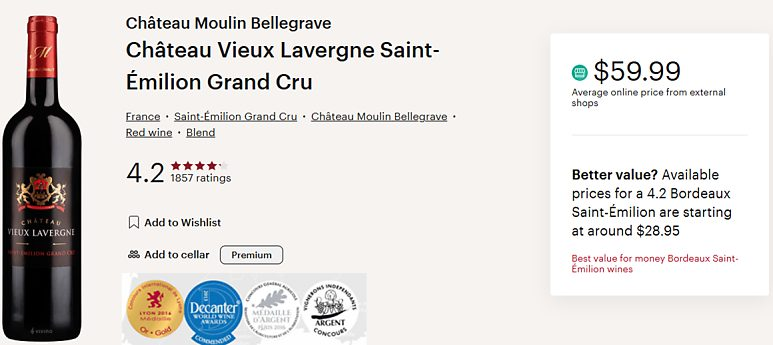

생테밀리옹 그랑 크뤼, 왜 와인을 좋아하는 사람들이 찾을까?
와인을 마시다 보면 한 번쯤은 만나게 되는 이름이 있습니다.
와인을 마시다 보면 한 번쯤은 만나게 되는 이름이 있습니다.
Saint-Émilion Grand Cru (생테밀리옹 그랑 크뤼)
보르도를 대표하는 산지이자, 와인을 좋아하는 사람이라면 언젠가는 경험하게 되는 이름이죠.
그런데 많은 분들이 궁금해합니다. "생테밀리옹 그랑 크뤼가 정확히 뭐길래 좋은 거야?"
1. 생테밀리옹은 보르도의 '우안'을 대표하는 산지
프랑스 보르도는 크게 좌안(Left Bank)과 우안(Right Bank)으로 나뉩니다. 그중 생테밀리옹은 우안을 대표하는 산지로, 메를로(Merlot) 품종을 중심으로 한 부드럽고 풍부한 스타일의 와인을 생산합니다.
강한 탄닌과 묵직함보다는 잘 익은 검은 과실의 풍미, 부드러운 질감, 그리고 우아한 균형감이 특징입니다. 그래서 보르도 입문자부터 와인을 즐겨 마시는 분들까지 폭넓게 사랑받는 지역이기도 합니다.
2. 그랑 크뤼(Grand Cru)는 최고 등급이라는 뜻일까?
의외로 많은 분들이 오해하는 부분입니다. 생테밀리옹의 'Grand Cru'는 부르고뉴의 Grand Cru처럼 최상위 등급을 의미하는 것은 아닙니다.
대신 일반 Saint-Émilion보다 더 엄격한 생산 기준(수확량 제한, 최소 알코올 도수, 숙성 기간 등)을 충족한 와인에 부여되는 명칭입니다.
쉽게 말하면 "생테밀리옹 중에서도 조금 더 좋은 밭에서, 조금 더 엄격하게 만든 와인"정도로 이해하시면 됩니다. 그래서 Grand Cru 표기가 있다고 무조건 부담스러운 가격은 아니지만, 일정 수준 이상의 훌륭한 품질을 기대할 수 있습니다.
3. 샤토 비유 라베르뉴는 어떤 와인일까?
이 와인이 꾸준히 사랑받는 이유는 화려한 명성 때문이 아닙니다. 오히려 "생테밀리옹 스타일을 가장 합리적으로 경험할 수 있는 와인"이라는 점에 있습니다.
현재 비비노(Vivino)에서는 약 1,900건 이상의 누적 평가를 바탕으로 4.2점의 높은 평점을 기록하고 있습니다.
와인을 좋아하게 되는 순간은 대부분 값비싼 와인을 마셨을 때가 아니라, "아, 이래서 사람들이 보르도를 좋아하는구나." 하고 이해되는 한 병을 만났을 때입니다.
샤토 비유 라베르뉴 생테밀리옹 그랑 크뤼 2020은 바로 그런 와인에 가깝습니다.

와인 평점에서 중요한 것은 숫자보다 '평가 수'입니다. 수십 명이 평가한 4.2점과, 수천 명이 평가한 4.2점은 신뢰도 면에서 의미가 전혀 다릅니다. 그만큼 많은 사람들이 대중적으로 만족했다는 뜻이니까요.
🍷 어떤 향과 맛을 기대할 수 있을까?
비비노 사용자들의 평가를 종합하면 다음과 같은 특징이 가장 많이 언급됩니다.
블랙베리, 자두 같은 검은 과실
바닐라와 오크
다크 초콜릿, 가죽과 흙내음
은은한 스파이스
한마디로 표현하면, "검은 과실의 풍부함 위에 바닐라 오크와 가죽 뉘앙스가 더해진 전형적인 우안 보르도 스타일"입니다. 너무 무겁지도, 너무 가볍지도 않아서 첫 잔은 편하게 마실 수 있지만, 마실수록 보르도 특유의 깊이를 느낄 수 있습니다.
4. 이런 분들께 추천합니다
✔ 생테밀리옹 스타일을 처음 경험해보고 싶은 분
✔ 스테이크, 양갈비, 소고기 요리와 함께 즐길 레드를 찾는 분
✔ 비즈니스 미팅이나 격식 있는 자리에 매너 있는 와인을 가져가고 싶은 분
✔ 부담 없는 가격으로 실패 없는 보르도 와인을 선물하고 싶은 분
5. 이번 재입고가 반가운 이유
최근 몇 년간 환율과 국제 물류비가 크게 상승하면서 많은 수입 와인들이 가격 인상을 피하지 못했습니다. 하지만 이번 2020 빈티지까지는 가격 인상 없이 입고됩니다.
2020년은 보르도 우안의 매우 뛰어난 빈티지로 손꼽힙니다. 좋은 빈티지, 검증된 평점, 그리고 변함없는 가격. 생테밀리옹 그랑 크뤼를 경험해보고 싶었던 분이라면 지금이 가장 좋은 기회일지도 모르겠습니다.
이 글은 땡큐와인 네이버 블로그에 먼저 올린 글이에요.